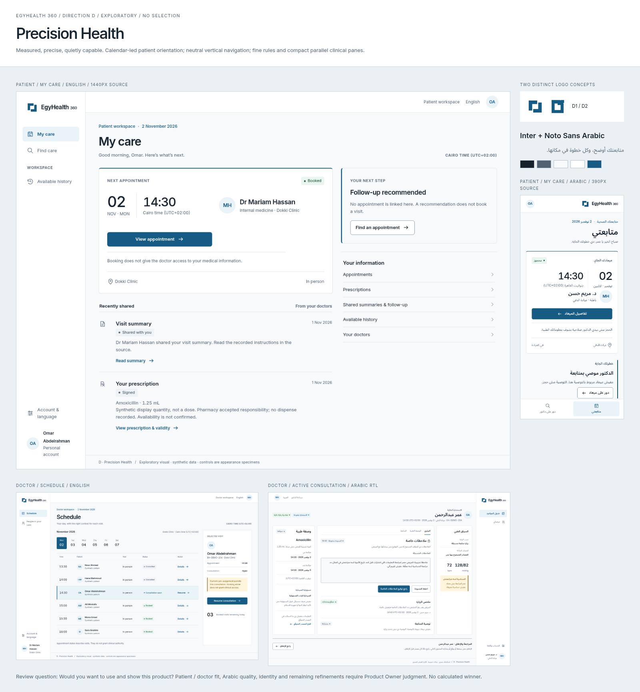
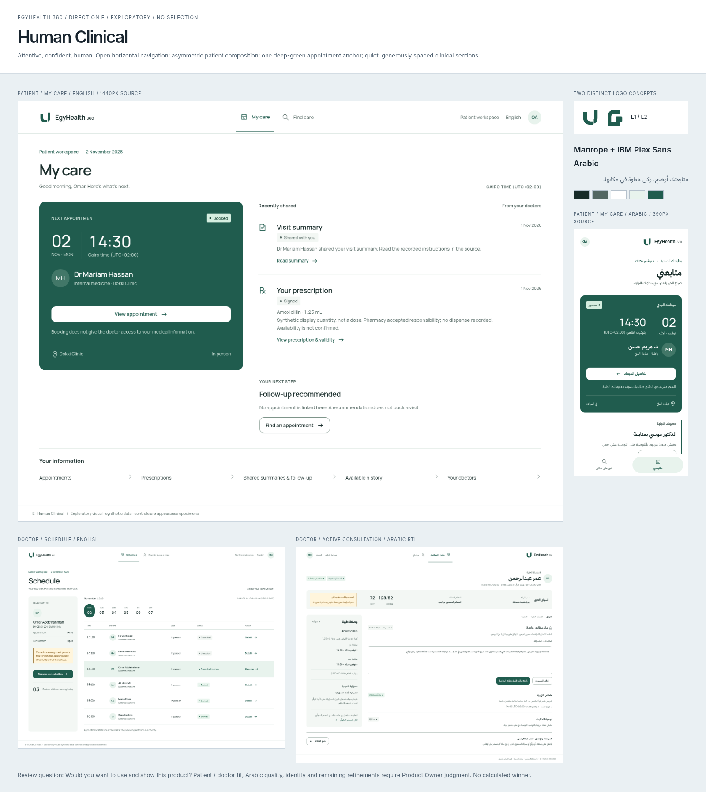
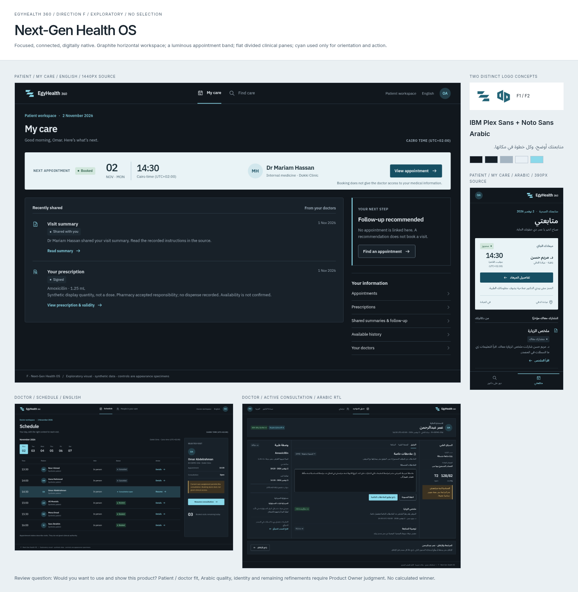

Direction D
Precision Health
Measured, precise, quietly capable.

Open all screens, typography and logo studies →Exploratory proposals. No selected direction, logo, palette or typeface. Accepted UX, IA and content remain the foundation.
Measured, precise, quietly capable.

Open all screens, typography and logo studies →Attentive, confident, human.

Open all screens, typography and logo studies →Focused, connected, digitally native.

Open all screens, typography and logo studies →Desktop patient + Arabic mobile + clinician comparison · Six new logo concepts, actual 16/24/32px proofs · Delivery and evidence
Choose a direction, request named refinements, reject all, or request a coherent hybrid for a further review. No automatic recommendation, score or winner.